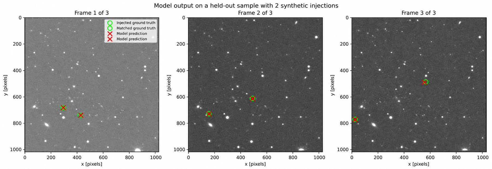
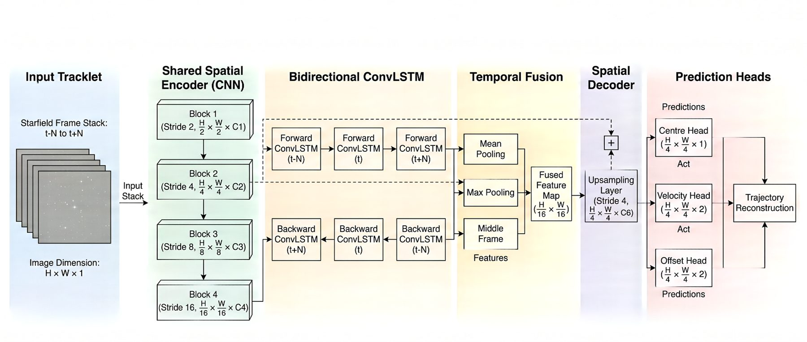
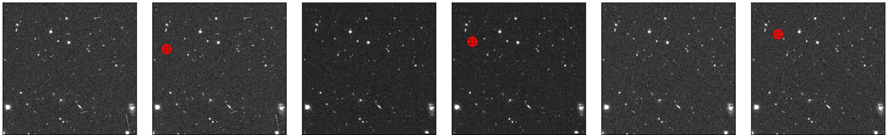
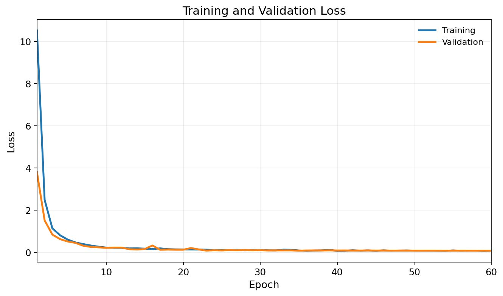
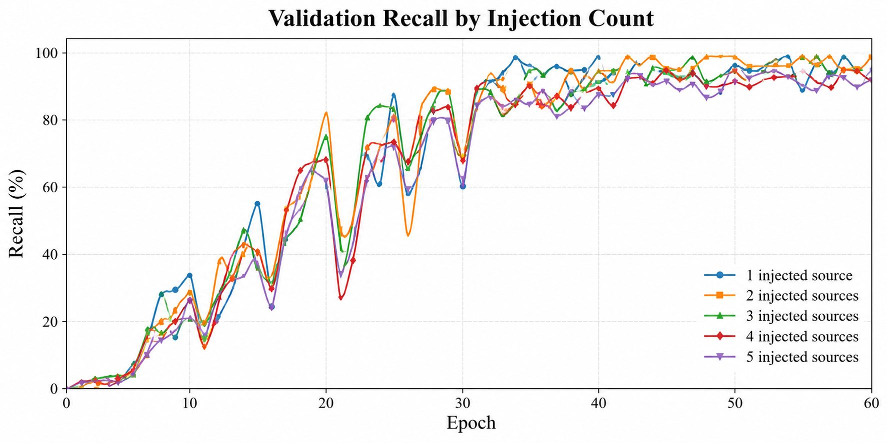
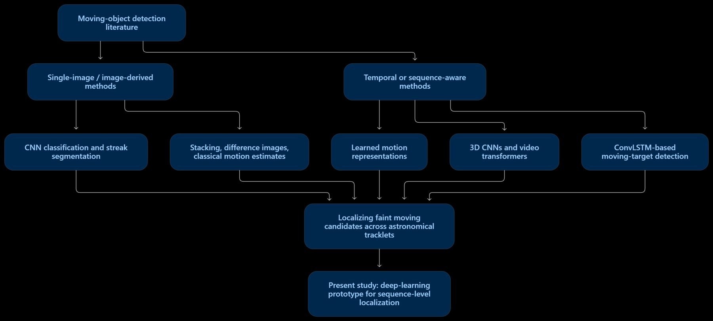

IEOM 2026 · Bangalore · VIT-AP University
Catching faint asteroids
by the way they move.
A bidirectional ConvLSTM that reads a short sequence of telescope frames, finds sources that move between exposures, and returns where they are and where they're going — trained on synthetic movers injected into real Dark Energy Camera skies.
Micro-averaged, track-level, on 20 held-out DECam tracklets with 1–5 synthetic injections.
How it works
-
1
Upload a sequence
Two or more registered frames (
.fitsor.png) of the same patch of sky, in time order. -
2
CNN → BiConvLSTM
A shared encoder reads each frame; forward and backward ConvLSTMs reason about what changed across time.
-
3
Tracks, not blips
A centre heatmap and velocity field decode into trajectories with per-frame coordinates and confidence.

Live inference
Run detection
Build your sequence
No frames yetDrop frames here or browse
.fits · .fit · .fts · .png — 2 or more, same field, any order (you can reorder below)
Run the model
Detections, annotated frames and trajectories will appear here.
Results
Trajectories across frames
Positions in the registered image grid. Click a point to jump to that frame.
Coordinates per frame
x, y in pixels for every track. Click a row to view that frame.
Detected objects
Click a row to isolate that track in the viewer.
Raw API response
About the method
Motion is the signal
A single exposure can't tell a faint asteroid from noise, a cosmic ray or a dim star. Across several exposures, it moves. The model is built to learn that movement directly from the ordered image sequence.
Model architecture
Hover or tap a stage to see what it does. Shapes are for a 1024 × 1024 input.
Five-stage pipeline
- Prepare sequences. FITS frames grouped into tracklets, cropped to 1024², WCS-registered, MAD-normalised.
- Inject synthetic movers. Gaussian-PSF sources with known positions and 50–75 px/frame motion.
- Extract spatiotemporal features. Shared CNN encoder, then forward + backward ConvLSTMs.
- Localise & regress motion. Centre heatmap on the reference frame, plus velocity and sub-pixel offset.
- Decode & evaluate. Threshold + NMS, reconstruct tracks, match against injected ground truth.
Training configuration
Why a reference frame?
Rather than predicting a separate map for every frame, the network predicts object centres once — on the middle frame tr = ⌊T/2⌋ — and a velocity for each. Every other position follows from linear motion, xt = xr + vx(t − tr). Bidirectional recurrence means the reference frame sees context from both before and after it.

Data
Real skies, synthetic movers
Labelled asteroid tracklets are scarce, so the benchmark keeps the hard part real: genuine DECam backgrounds with stars, galaxies, noise and artifacts. Moving sources with known trajectories are injected on top for supervision.
From archive to training sample
- Retrieve DECam FITS observations from the NOIRLab Astro Data Archive.
- Quality control: valid FITS structure; masks and weight maps excluded.
- Group consecutive exposures of a field into ordered tracklets.
- Register each frame to a shared WCS reference grid, crop 1024 × 1024.
- Normalise per frame with median and MAD.
- Inject synthetic movers (before reprojection, so they're resampled like the sky), then clip.
Synthetic injection
- Profile
- Gaussian PSF, sampled amplitude & width
- Apparent motion
- 50–75 px / frame (fast NEO-like)
- Trajectory
- Linear, with small perturbations
- Validity
- Whole path inside crop & registered area
- Faintness
- SNR = Fsource / σbackground
- Negatives
- Same backgrounds, nothing injected
Partitioning by field and night
Tracklets from the same field–night group never cross subsets, to limit leakage between near-identical backgrounds. Proportions are of groups, not individual samples.

Evaluation
How well does it work?
The selected checkpoint was evaluated once on 20 held-out tracklets, with one to five simultaneous injections. Crowded scenes are harder, but localisation stays at about 3 pixels throughout.
Precision, recall and F1 vs. number of movers
Track-level, held-out set. Y-axis starts at 0.80 to show the trend.
Exact-set accuracy
Every target found and nothing extra.
Median localisation error
Pixels, per matched track.
Median velocity error
Pixels per frame (≈ 4–6% of speed).
Detection performance (Table 5)
Localisation & motion (Table 6)
Median track coverage was 1.000 in every scenario.
Evaluation protocol


Proceedings of the 6th India International Conference on Industrial Engineering and Operations Management · Bangalore, November 5–7, 2026
A ConvLSTM Framework for Faint Moving-Source Detection in Astronomical Image Sequences
School of Computer Science and Engineering (SCOPE), VIT-AP University, Amaravati, Andhra Pradesh, India
Abstract
Faint moving asteroids and other objects in astronomical images are challenging to detect against crowded stellar fields, background noise, and imaging artifacts. Their motion across successive exposures provides a distinguishing feature, but low brightness and subtle temporal signatures complicate reliable detection and localization. This study presents a ConvLSTM-based framework for detecting and localizing moving sources in short sequences of Dark Energy Camera (DECam) images, represented as astronomical tracklets. Owing to the limited availability of labelled asteroid observations, synthetic moving sources were injected into DECam image sequences to construct a supervised dataset with known target positions and trajectories. The proposed architecture was trained on this synthetic benchmark and evaluated on a held-out set of twenty tracklets containing one to five simultaneous injections. Across all scenarios, the detector achieved a micro-averaged track-level precision of 0.930, recall of 0.863, and F1-score of 0.895, with a median localization error of approximately 3.0 pixels. Recall decreased from 91.4% for one injection to 83.1% for five injections, although the trend was not strictly monotonic. The results demonstrate the feasibility of using ConvLSTM-based spatiotemporal learning to detect and localize fast-moving sources in astronomical tracklets under controlled synthetic conditions. This work establishes an architectural proof of concept for applying deep learning to astronomical moving-source detection.
Contributions
- A supervised benchmark built by injecting synthetic movers into real DECam sequences.
- A BiConvLSTM detector that predicts reference-frame centres, velocity and sub-pixel offsets.
- Track-level evaluation of recovery, localisation and motion as target density grows.
Next steps
- More held-out fields and nights, with confidence intervals.
- Labelled real asteroid tracklets.
- Baselines (difference imaging) and temporal-module ablations.
- Resolution and SNR / velocity sweeps.
Cite
@inproceedings{singh2026convlstm,
title = {A ConvLSTM Framework for Faint Moving-Source
Detection in Astronomical Image Sequences},
author = {Singh, Kali and Nalbandh, Sameer and Das, Ankur
and Zoya, Syed Sadia and Kalyani, S.},
booktitle = {Proceedings of the 6th India International Conference
on Industrial Engineering and Operations Management},
address = {Bangalore, India},
month = nov,
year = {2026}
}
Team
- Kali SinghB.Tech CSE
- Sameer NalbandhB.Tech CSE
- Ankur DasB.Tech CSE
- Syed Sadia ZoyaB.Tech CSE
- Dr. S. KalyaniSupervisor · Asst. Professor Sr. Grade-2
